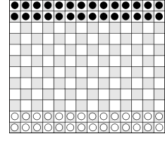

|
Letting a game inventor write about his own game isn’t quite the same as letting an author review his own book. Self-review may not be respectable in an established art form like the novel, but it does have a long tradition in art forms struggling for acceptance. The most recent examples are the underground film-makers of the sixties who reviewed their own works, and the ‘happenings’ and other art events that were usually accompanied by polemics from the creators explaining what they were doing. Even though games are as old as any art form (in fact, it makes more sense to say that art is a game form than that games are an art form), games are not generally accepted as worthy of critical study (except maybe as simulations or mathematical models). Thus it’s fortunate that game inventors have the pages of GAMES & PUZZLES to explain why their games are good and, also, why they are important.
Epaminondas is my latest game, and it has just been published by Philmar Ltd. A brief description of the rules is given at the end of this article. I won’t actually review the game (I’ll even forgo explaining why it is called ‘Epaminondas’), except I will say it has great clarity. I wanted to devote the major portion of this article to a discussion of clarity, a concept I came to understand while working on Epaminondas.
Clarity is essentially the ease with which a player can see what is going on in a game. It is a useful idea for a game inventor to keep in mind during the development of a game, and it is useful in the criticism of games. Most important, it explains what makes a game ‘deep’.
A lot has been written about the ‘depth’ of games like Chess and Go without anyone really explaining what ‘depth’ is. Most people assume that depth can be explained purely in terms of logic or game theory. This is not true.
If you look at games only in terms of the size of their strategy trees, it turns out that any perfect-information, non-chance game is complex enough to be beyond complete human understanding—thus in this sense all these games have equal depth.
I’m excluding here any games that have a known perfect strategy or games that are over in a few moves. What I mean is, if you go far enough down the strategy tree (say about ten moves, which is normally farther than a human can see) then all games have enough branches so a human can’t understand them all. Certain games, like Chess, have more choices (branches) from each board position than do other games, like Wari. But you just have to go farther down the tree in Wari and you’ll find enough branches to boggle the mind.
Impossible to think ahead
I recently played Stay Alive, a game made out of a lattice of slats, each slat having a pattern of holes. The game involved moving the slats to allow marbles to fall through.
This was a simple, fun game where no one tried to think ahead at all. In fact it was impossible to think ahead since it would have been very difficult to figure out what the next alignment of holes would be. But the pattern of holes in the slats was known; so it would theoretically be possible to work out all the board positions that would follow from any position. Also, since chance was not involved, Stay Alive must be considered a perfect-information, non-chance game. If you work your way far enough down its strategy tree you could come up with as many choice points as are considered in a game of Chess. Yet no one could consider Stay Alive to be as deep as Chess.
What then gives one game more seeming ‘depth’ than another? It is not the comparative sizes of the strategy trees or the number of choices available. Depth depends simply on how far ahead, or how many choices, a human can see. And how far a human can see depends simply an the clarity of the game.
Epaminondas is clear because the magnitude and direction of the forces are shown by the size and direction of the phalanxes. Thus the patterns that develop during the game graphically display the confrontation of power.
Ploy (GAMES & PUZZLES No.22) is another example of a game with good clarity. Each piece is marked with from one to four lines that indicate the directions the piece can move, and (with one exception) the number of spaces the piece can move is equal to the number of lines marked on it. This makes it quite easy to see where each piece is headed and what pieces are under attack.
The Chess pieces are also quite clear, except for the knight. And in Chess the back pieces are gradually exposed—lines are opened and choices expand as the game develops. This creates greater clarity and definition than would be the case if all pieces were mobile at the beginning and all choices would have to be considered.
The trouble with Ultima
As an example of a game utterly lacking in clarity there is Ultima, unfortunately one of my earlier inventions (although it’s a board game, it is described in my book Abbott’s New Card Games). In Ultima each piece uses a different form of capture—leaping, intercepting, withdrawing, etc. This is an interesting idea but the resulting game is so complex that it’s difficult to see more than one or two moves ahead and too many pieces are captured simply by surprise attack. For those readers who know this game (and there are people who still insist on playing it) I can point out that the Withdrawer and Immobilizer are fairly clear pieces, the first because you can easily see what it is attacking and the second because it freezes a portion of the board and creates a focus for the action. It’s the other pieces, especially the Pawns and the Coordinator, that cause the confusion. One of these years I hope to revise this game by replacing the confusing pieces. It’s interesting to note that my original idea for Epaminondas came during a moment of frustration while working on Ultima.
L-Game ‘elegantly minimal’
One final point: clarity has nothing to do with simplicity, or even with elegance. I’ll give two examples: Edward de Bono’s L-Game (GAMES &, PUZZLES No. 30) is elegantly minimal—it uses only four pieces and is played on a board of only 4x4 squares. It is not, however, clear. I find it very hard to picture what the board will look like when I turn my ‘L’ over, I find it harder still to visualize my opponent’s responses, and it’s impossible for me to look ahead to my next move. I fear I’ll have to read de Bono’s The Five Day Course in Thinking before I’ll be able to see far ahead in the L-Game.
The second example is Wari or any of the Mancala games. These games do not appear to be simple. Reading their rules will give you the impression that they’d be very difficult to play. How can you possibly think more than one move ahead when you have to count the beans in each of your cups then count around the board to see where the last bean from each cup would be dropped? Yet when you play one of these games you find it has a surprising clarity—you easily remember where the last bean from each cup will go and can see how these points would change as more beans are added to the various cups.
Here is a quick summary of the points I wanted to make. A game can be simple yet lack clarity, and conversely a game can be complicated but still clear. Playing a game soon reveals its degree of clarity. The greater the clarity of a game, the farther you can see into it, and therefore the greater its depth for you.
Epaminondas condensed
|
|

Here is a condensation of the rules to Epaminondas. The initial position is shown in the diagram.
In his turn a player either moves one piece one space in any direction or he moves a line of pieces. A line of adjacent pieces (called a ‘phalanx’) can be moved together any number of spaces up to a maximum equal to the number of pieces moved. It moves along the direction of the line that defines the phalanx.
Captures are made when a phalanx is involved in a head-on encounter with an enemy phalanx or with a single enemy piece. The phalanx stops at the first enemy piece encountered. It captures that piece and all adjacent enemy pieces directly behind it, as long as the enemy phalanx thus captured is smaller than the capturing phalanx.
The object of the game is to advance pieces across the board. When a player succeeds in moving a piece onto the farthest row, his opponent must immediately reply by capturing that piece (or another on that row) or by moving one of his own pieces onto his own farthest row. If the opponent cannot do this, the player has won.
This article turned out to be quite influential; though, unfortunately, most people misunderstood it. Here’s what they thought I was saying: The depth of a game depends on the size of the strategy tree. That was exactly the idea I was arguing against. But even those who misunderstood the article thought it was good. However, one game inventor, Christian Freeling, wrote that the article was tautological. Yeah, well of course it is if you don’t understand it.
Maybe here is a better way I can express my idea: The apparent “depth” of a game does not depend on how far you can travel down the strategy tree of the game. It instead depends on how far you can see down the strategy tree. And how far you can see depends on the clarity of the game.
I discovered that the idea of clarity can also be applied to the logic mazes I’ve been working with. A maze should of course be confusing, but the rules for traveling though the maze should not be confusing. If the rules are confusing, then it’s hard to see the consequences of a move, you can’t see more than one move ahead, and you can’t really plan ahead.
To the page about Epaminondas
To the page about Ultima
Back to the games home page
|